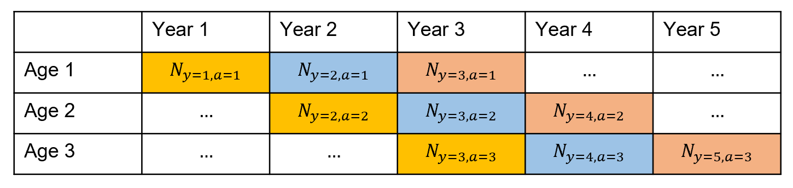
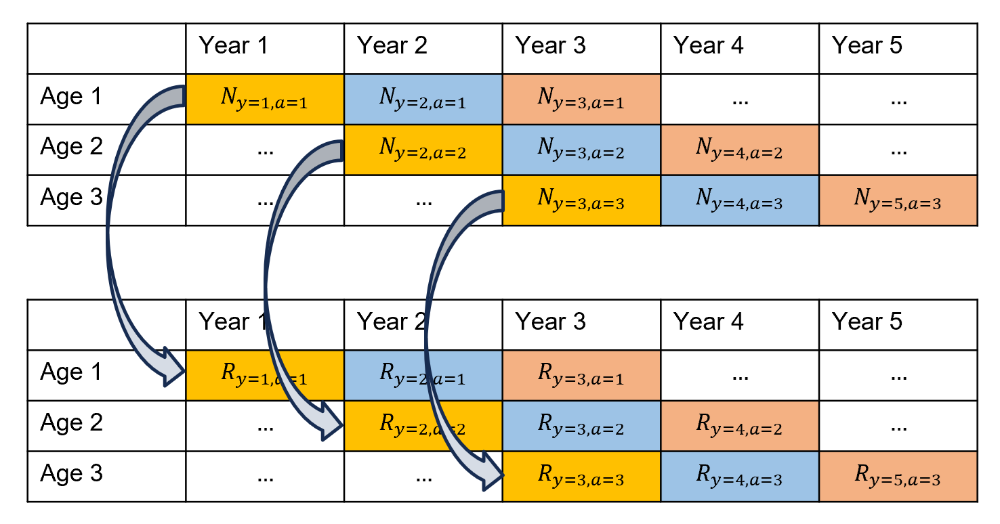
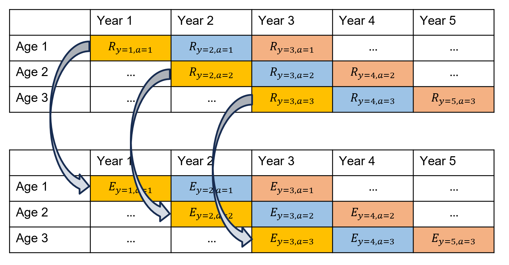
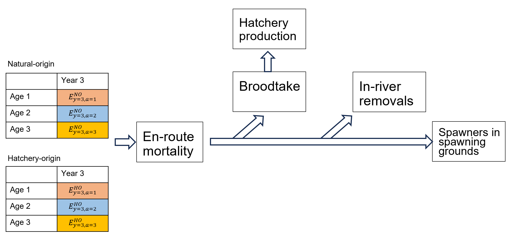
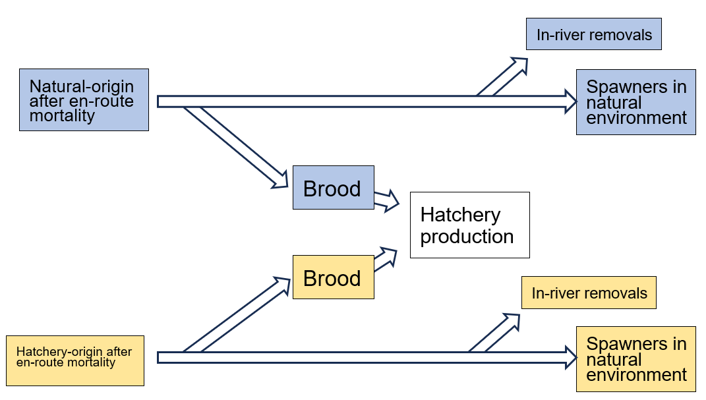
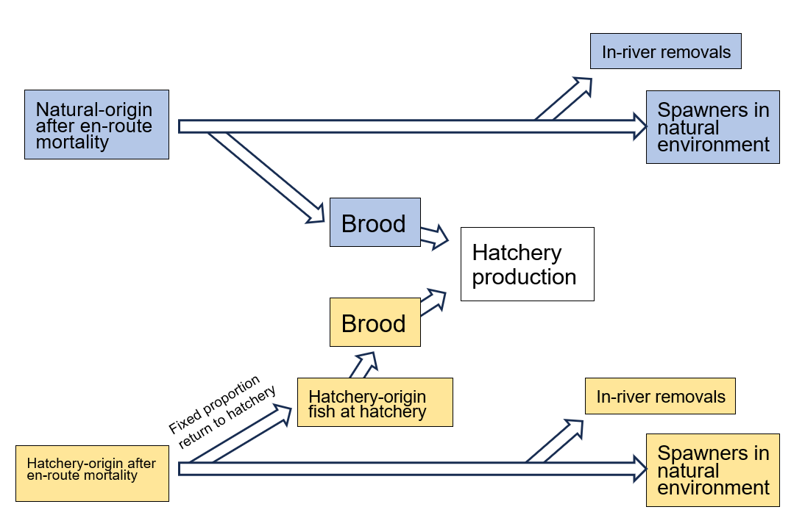
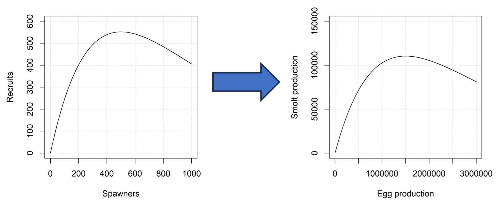
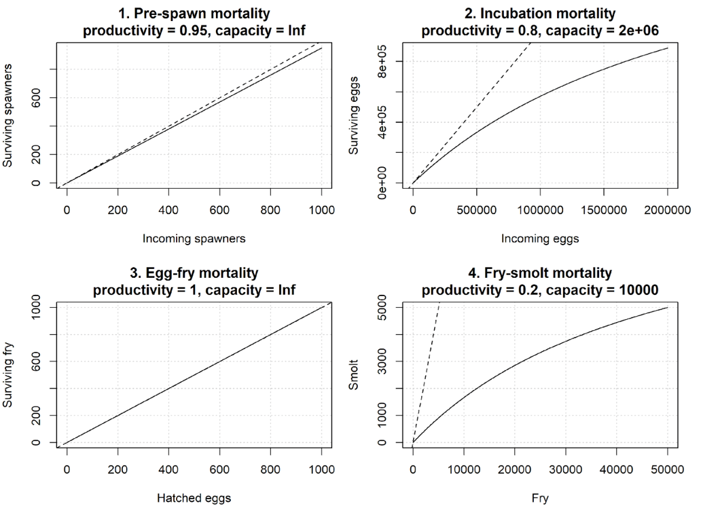

Background
salmonMSE is a quantitative and stochastic decision-support tool for Pacific salmon focusing on strategic trade-offs among harvest, hatchery and habitat management levers. salmonMSE can be used for risk-based analyses to evaluate the performance of and prioritize management actions and identify trade-offs towards achieving biological and harvest objectives.
salmonMSE is a generalizable tool applicable across salmon species and populations, and expands upon previous simulation tools such as samSim, AHA, and openMSE. Mechanistically, such tools project a simulated population over successive generations to obtain the long-term equilibrium properties of the state dynamics.
To accommodate more complex life histories, salmonMSE is age-structured which is useful for species that have returns comprising multiple brood-years. Age-structured dynamics also explicitly model juvenile mortality in the marine life stage. Multi-population models are supported to evaluate outcomes across stock complexes, e.g., managing a mixed fishery that catches several populations simultaneously. Importantly, salmonMSE was developed to comprehensively support evaluation of harvest policies, hatchery enhancement programs, and changes in early freshwater survival simultaneously. Finally, stochasticity can be incorporated in the model to evaluate outcomes across uncertain parameters. In general, its flexibility is intended to encapsulate a gradient of simple to more complex models as data availability to inform parameters allows.
salmonMSE can be used to address questions such as:
- How do mark-selective fisheries impact harvest and conservation objectives?
- How does a change in hatchery release strategy impact harvest and conservation objectives?
- How does a candidate broodtake rule impact the ability to achieve PNI and conservation objectives?
- How do changes in environmental drivers impact ability to rebuild?
- What combination of fishery exploitation rates and hatchery production targets allow us to meet spawner objectives?
This website is intended to be a comprehensive documentation of the functionality of salmonMSE. Source code is available on Github and the package is also distributed on CRAN.
Getting started
A salmon operating model contains the parameters for the population
dynamics and the management levers to be implemented. In salmonMSE, an
object of class SOM can be created from constituent objects
of class Bio, Habitat, Hatchery,
and Harvest as follows:
- The
Bioobject specifies the natural production, for example, maturity, fecundity, stock-recruit relationship, and marine survival. - The
Habitatobject (optional) specifies freshwater survival from egg, fry, and smolt life stages as a series of density-dependent functions, with options for time-varying survival, for example, as a function of environmental or habitat mitigation/restoration actions. - The
Hatcheryobject specifies the parameters surrounding hatchery production, such as the number of target releases, in-river removals of hatchery-origin spawners, and the population fitness parameters arising from interbreeding of hatchery-origin and natural-origin spawners. - The
Harvestobject specifies the exploitation rate and harvest control rules for marine fisheries, with options for mark-selective fishing. - The
Historicalobject specifies the starting conditions for the projections.
Additional slots in the SOM class control the settings
of the projections, for example, the number of years and simulation
replicates.
Details on the slots of the various S4 classes can be obtained by
typing class?SOM in the R console.
The simulation can then run with the salmonMSE()
function:
The output is a class SMSE object containing the state
variables and some performance metrics pertaining to hatchery dynamics
(fitness, PNI, etc.) as arrays typically indexed by simulation, stock,
age, and year. For example, SMSE@NOS reports the natural
origin spawners.
For convenience and comparison purposes, salmonMSE distributes an implementation of AHA in R as well:
The resulting output is a named list following the format of the
SMSE object, but indexed by generation instead of year.
More details are also provided in the example article. Additional tutorials are provided on this website to demonstrate various settings of the operating model, and provide R code to implement analyses to compare management options across different states of nature (in separate model runs) with plotting functions to facilitate comparison.
Overview of life cycle
This section is intended to provide a visual overview of the life cycle model. The mathematical equations are provided in a separate article.
Juvenile marine life stage, returns, and escapement
The juvenile life stage during the projection can be envisioned through a series of age-structured matrices that keeps accounting of abundance \(N\) by year \(y\) and age \(a\), with separate accounting for natural-origin and hatchery-origin fish.
Diagonals of the below matrix correspond to brood-years (individual cohorts by colour). Brood-years advance age classes after accounting for pre-terminal fishing, maturity, and natural survival.

The return \(R\) conceptually appear at the midpoint of the year, calculated from after pre-terminal exploitation and maturity, and are accounted in a separate matrix:

Similarly, the escapement is calculated from the return after marine terminal exploitation.

In-river return
The columns of the escapement matrix comprise the return to river in a calendar year. Below, we show the natural-origin and hatchery-origin calendar-year return migration to the spawning ground.
In summary, the return can experience en-route mortality, e.g., in large river systems. Afterwards, the return may be used as brood for hatchery production, further in-river removals (not used for brood), before arrival to spawning grounds:

Brood
Brood can be modeled in two ways, with slightly different accounting for hatchery-origin brood.
First, brood is taken en-route to spawning grounds, where the brood is taken from the in-river return:

Alternatively, some fraction of the hatchery-origin fish return to the hatchery, and hatchery-origin brood is taken from this fraction. This scenario may occur when fish return through swim-in facilities:

Hatchery production uses similar levers and assumptions as in the All-H Analyzer (AHA). Users specify target releases and the model back-calculates target egg production and broodtake from hatchery survival and brood fecundity.
Of course, failure to achieve target releases can occur with insufficient return, and other constraints placed by the analyst, e.g., limiting natural-origin brood to ensure sufficient spawning in the natural environment.
Extended flexibility for brood rules is supported through custom R functions.
Next generation
Once spawners reach the spawning round, egg production is calculated from spawner abundance and fecundity.
There are two methods to map survival from egg production to outmigrating juveniles in the next year:
- A single density-dependent function can be modeled (egg-juvenile survival), or 2: A series of stage-specific density-dependent functions, representing habitat processes, is modeled
Single stock-recruit relationship
A Ricker or Beverton-Holt stock-recruit relationship (SRR) can be used to calculate juveniles (of age 1) of the next generation from the parental egg production.
For the Ricker model, salmon populations are typically modeled by a spawner to return SRR. salmonMSE provides the capability to create equivalent egg-juvenile SRRs from parameters of a spawner-return SRR.

Stage-specific survival
Survival at up to four life stages can be modeled:
- Pre-spawn mortality: some proportion of adults that return to spawning ground die. The egg production is calculated from survivors
- Egg incubation mortality: the egg production can exhibit mortality from scouring and erosion of bottom substrate
- Egg-fry mortality: after egg emergence, fry mortality can occur
- Fry-smolt mortality: another life stage to model mortality from egg to smolt life stage
At each stage, a Beverton-Holt density-dependent function is used to describe the survival function. These functions can be configured to be density-independent, as shown below:

Out-migration
After the smolt life stage, the cohort is considered as age 1 and may be treated as having entered the marine life stage (see Juvenile marine life stage above).
Development
salmonMSE is actively developed, and issues can be posted on Github.